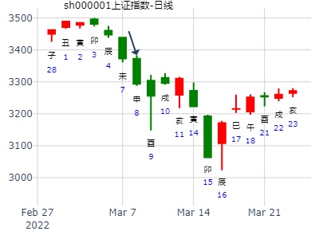
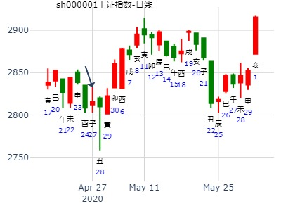
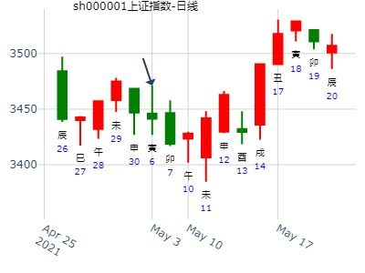
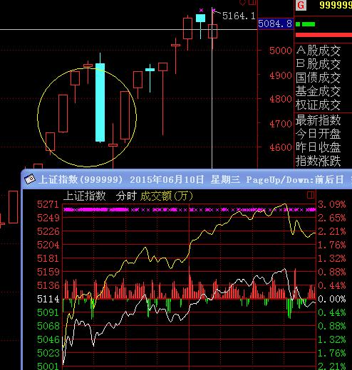
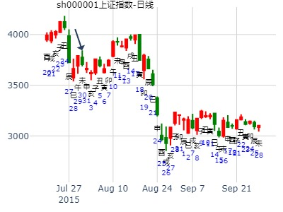
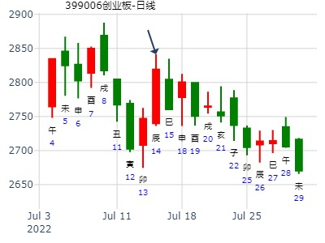
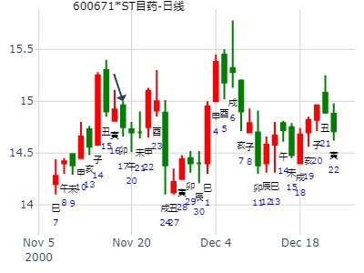
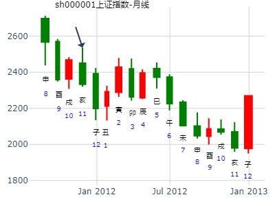

主帖标题: 捍卫老祖宗感通卦的尊严：测2020.3.4上证走势？N05
测2020.3.4上证开盘走势？
公历起卦时间：2020年3月4日9时10分 (电脑自动)
干支：庚子年 戊寅月 丙午日 癸巳时 （日空：寅卯）
坎宫：水雷屯 坤宫：地雷复 (六合)
六神 伏神 本 卦 变 卦
青龙 兄弟戊子水 ▅▅ ▅▅ 父母癸酉金 ▅▅ ▅▅
玄武 官鬼戊戌土 ▅▅▅▅▅ 应 ○→ 兄弟癸亥水 ▅▅ ▅▅
白虎 父母戊申金 ▅▅ ▅▅ 官鬼癸丑土 ▅▅ ▅▅ 应
螣蛇 妻财戊午火 官鬼庚辰土 ▅▅ ▅▅ 官鬼庚辰土 ▅▅ ▅▅
勾陈 子孙庚寅木 ▅▅ ▅▅ 世 子孙庚寅木 ▅▅ ▅▅
朱雀 兄弟庚子水 ▅▅▅▅▅ 兄弟庚子水 ▅▅▅▅▅ 世
主帖标题: 捍卫老祖宗感通卦尊严：测2020.3.16上证收盘走势？2赛01
测2020.3.16上证收盘十位数jon5yn?
公历起卦时间：2020年3月16日13时12分 (电脑自动)
干支：庚子年 己卯月 戊午日 己未时 （日空：子丑）
坎宫：水雷屯 坤宫：地雷复 (六合)
六神 伏神 本 卦 变 卦
朱雀 兄弟戊子水 ▅▅ ▅▅ 父母癸酉金 ▅▅ ▅▅
青龙 官鬼戊戌土 ▅▅▅▅▅ 应 ○→ 兄弟癸亥水 ▅▅ ▅▅
玄武 父母戊申金 ▅▅ ▅▅ 官鬼癸丑土 ▅▅ ▅▅ 应
白虎 妻财戊午火 官鬼庚辰土 ▅▅ ▅▅ 官鬼庚辰土 ▅▅ ▅▅
螣蛇 子孙庚寅木 ▅▅ ▅▅ 世 子孙庚寅木 ▅▅ ▅▅
勾陈 兄弟庚子水 ▅▅▅▅▅ 兄弟庚子水 ▅▅▅▅▅ 世

主帖标题: 本周沪市有出现大幅度急跌的情况，
公历时间：2022年3月8日19时18分
干 支：壬寅年 癸卯月 庚申日 丙戌时 旬空：辰巳 辰巳 子丑 午未
坎宫：水雷屯 坤宫：地雷复（六合）
六神 伏 神 【本 卦】 【变 卦】
螣蛇 ▄▄ ▄▄ 兄弟戊子水 ▄▄ ▄▄ 父母癸酉金
勾陈 ▄▄▄▄▄ 官鬼戊戌土 应○ ▄▄ ▄▄ 兄弟癸亥水
朱雀 ▄▄ ▄▄ 父母戊申金 ▄▄ ▄▄ 官鬼癸丑土 应
青龙 妻财戊午火 ▄▄ ▄▄ 官鬼庚辰土 ▄▄ ▄▄ 官鬼庚辰土
玄武 ▄▄ ▄▄ 子孙庚寅木 世 ▄▄ ▄▄ 子孙庚寅木
白虎 ▄▄▄▄▄ 兄弟庚子水 ▄▄▄▄▄ 兄弟庚子水 世
梅花易睬 发表于 2022-3-8 17:41
屯之复 明天大概率是反弹失败收阴，，结合三楼看跌幅会明显减小，周四会出现强势反弹，一天！

主帖标题: 上证大盘巳月份行情走势如何？（有更新）
占事：上证指数巳月份走势？
排卦：元亨利贞网六爻在线排盘系统 https://www.china95.net
公历起卦时间：2020年4月27日15时4分 (手工指定)
干支：庚子年 庚辰月 庚子日 甲申时 （日空：辰巳）
坎宫：水雷屯 坤宫：地雷复 (六合)
六神 伏神 本 卦 变 卦
螣蛇 兄弟戊子水 ▅▅ ▅▅ 父母癸酉金 ▅▅ ▅▅
勾陈 官鬼戊戌土 ▅▅▅▅▅ 应 ○→ 兄弟癸亥水 ▅▅ ▅▅
朱雀 父母戊申金 ▅▅ ▅▅ 官鬼癸丑土 ▅▅ ▅▅ 应
青龙 妻财戊午火 官鬼庚辰土 ▅▅ ▅▅ 官鬼庚辰土 ▅▅ ▅▅
玄武 子孙庚寅木 ▅▅ ▅▅ 世 子孙庚寅木 ▅▅ ▅▅
白虎 兄弟庚子水 ▅▅▅▅▅ 兄弟庚子水 ▅▅▅▅▅ 世
午火休囚，日破。不遇生扶无根，为真破。巳月份即使生扶午火，扶之不起。弱的很，看跌。
出生：2020 年 性别：男 占事：上证指数巳月份走势？
排卦：元亨利贞网六爻在线排盘系统 https://www.china95.net
公历起卦时间：2020年4月27日15时4分 (手工指定)
干支：庚子年 庚辰月 庚子日 甲申时 （日空：辰巳）
乾宫：火天大有 (归魂) 艮宫：火泽睽
六神 伏神 本 卦 变 卦
螣蛇 官鬼己巳火 ▅▅▅▅▅ 应 官鬼己巳火 ▅▅▅▅▅
勾陈 父母己未土 ▅▅ ▅▅ 父母己未土 ▅▅ ▅▅
朱雀 兄弟己酉金 ▅▅▅▅▅ 兄弟己酉金 ▅▅▅▅▅ 世
青龙 父母甲辰土 ▅▅▅▅▅ 世 ○→ 父母丁丑土 ▅▅ ▅▅
玄武 妻财甲寅木 ▅▅▅▅▅ 妻财丁卯木 ▅▅▅▅▅
白虎 子孙甲子水 ▅▅▅▅▅ 官鬼丁巳火 ▅▅▅▅▅ 应
仇神父母虽化退，巳月属于官 父 兄旺之时。
排卦：元亨利贞网六爻在线排盘系统 https://www.china95.net
公历起卦时间：2020年4月27日15时9分 (手工指定)
干支：庚子年 庚辰月 庚子日 甲申时 （日空：辰巳）
神煞：驿马－寅 桃花－酉 日禄－申 贵人－丑，未
巽宫：火雷噬嗑 巽宫：天雷无妄 (六冲)
六神 伏神 本 卦 变 卦
螣蛇 子孙己巳火 ▅▅▅▅▅ 妻财壬戌土 ▅▅▅▅▅
勾陈 妻财己未土 ▅▅ ▅▅ 世 ╳→ 官鬼壬申金 ▅▅▅▅▅
朱雀 官鬼己酉金 ▅▅▅▅▅ 子孙壬午火 ▅▅▅▅▅ 世
青龙 妻财庚辰土 ▅▅ ▅▅ 妻财庚辰土 ▅▅ ▅▅
玄武 兄弟庚寅木 ▅▅ ▅▅ 应 兄弟庚寅木 ▅▅ ▅▅
白虎 父母庚子水 ▅▅▅▅▅ 父母庚子水 ▅▅▅▅▅ 应
最终能力传递到官鬼 旺泄财爻之力。跌
排卦：元亨利贞网六爻在线排盘系统 https://www.china95.net
公历起卦时间：2020年4月27日15时9分 (手工指定)
干支：庚子年 庚辰月 庚子日 甲申时 （日空：辰巳）
离宫：火山旅 离宫：火风鼎
六神 伏神 本 卦 变 卦
螣蛇 兄弟己巳火 ▅▅▅▅▅ 兄弟己巳火 ▅▅▅▅▅
勾陈 子孙己未土 ▅▅ ▅▅ 子孙己未土 ▅▅ ▅▅ 应
朱雀 妻财己酉金 ▅▅▅▅▅ 应 妻财己酉金 ▅▅▅▅▅
青龙 官鬼己亥水 妻财丙申金 ▅▅▅▅▅ 妻财辛酉金 ▅▅▅▅▅
玄武 兄弟丙午火 ▅▅ ▅▅ ╳→ 官鬼辛亥水 ▅▅▅▅▅ 世
白虎 父母己卯木 子孙丙辰土 ▅▅ ▅▅ 世 子孙辛丑土 ▅▅ ▅▅
巳月份总体跌。注意回避风险。
断卦水平很有限，以此操作后果自负吧。

主帖标题: 大盘指数6日-7日
出生：2021 年 性别：男 占事：大盘6-7
公历起卦时间：2021年5月5日20时24分 (在线摇卦)
干支：辛丑年 癸巳月 癸丑日 壬戌时 （日空：寅卯）
坎宫：水雷屯 坤宫：地雷复 (六合)
白虎 兄弟戊子水 ▅▅ ▅▅ 父母癸酉金 ▅▅ ▅▅
螣蛇 官鬼戊戌土 ▅▅▅▅▅ 应 ○→ 兄弟癸亥水 ▅▅ ▅▅
勾陈 父母戊申金 ▅▅ ▅▅ 官鬼癸丑土 ▅▅ ▅▅ 应
朱雀 妻财戊午火 官鬼庚辰土 ▅▅ ▅▅ 官鬼庚辰土 ▅▅ ▅▅
青龙 子孙庚寅木 ▅▅ ▅▅ 世 子孙庚寅木 ▅▅ ▅▅
玄武 兄弟庚子水 ▅▅▅▅▅ 兄弟庚子水 ▅▅▅▅▅ 世

占事：6月4日大盘涨跌 起卦方式：手动摇卦
公历时间：2015年6月3日21时50分
干 支：乙未年 辛巳月 庚戌日 丁亥时 旬 空：辰巳 申酉 (寅卯) 午未
水雷屯 地雷复
六神 伏神 本 卦 变 卦
腾蛇 ▅▅ ▅▅ 兄弟子水 ▅▅ ▅▅ 父母酉金
勾陈 ▅▅▅▅▅ 官鬼戌土 应Ｏ→ ▅▅ ▅▅ 兄弟亥水
朱雀 ▅▅ ▅▅ 父母申金 ▅▅ ▅▅ 官鬼丑土 应
青龙 妻财午火▅▅ ▅▅ 官鬼辰土 ▅▅ ▅▅ 官鬼辰土
玄武 ▅▅ ▅▅ 子孙寅木 世 ▅▅ ▅▅ 子孙寅木
白虎 ▅▅▅▅▅ 兄弟子水 ▅▅▅▅▅ 兄弟子水 世
九五：屯其膏，小贞吉，大贞凶。

占事：6月10日大盘涨跌 起卦方式：手动摇卦
公历时间：2015年6月9日17时37分
干 支：乙未年 壬午月 丙辰日 丁酉时 旬 空：辰巳 申酉 (子丑) 辰巳
坎宫：水雷屯 坤宫：地雷复（六合）
六神 伏 神 【本 卦】 【变 卦】
青龙 ▄▄ ▄▄ 兄弟戊子水 ▄▄ ▄▄ 父母癸酉金
玄武 ▄▄▄▄▄ 官鬼戊戌土 应O-> ▄▄ ▄▄ 兄弟癸亥水
白虎 ▄▄ ▄▄ 父母戊申金 ▄▄ ▄▄ 官鬼癸丑土 应
螣蛇 妻财戊午火 ▄▄ ▄▄ 官鬼庚辰土 ▄▄ ▄▄ 官鬼庚辰土
勾陈 ▄▄ ▄▄ 子孙庚寅木 世 ▄▄ ▄▄ 子孙庚寅木
朱雀 ▄▄▄▄▄ 兄弟庚子水 ▄▄▄▄▄ 兄弟庚子水 世

占事：7.22-7.31日走势？ 老虎99
排卦：元亨利贞网六爻在线排盘系统 http://www.china95.net
公历起卦时间：2015年7月22日7时54分 (手工指定)
干支：乙未年 癸未月 己亥日 戊辰时 （日空：辰巳）
水雷屯 地雷复
六神 伏神 本 卦 变 卦
勾陈 ▅▅ ▅▅ 兄弟子水 ▅▅ ▅▅ 父母酉金
朱雀 ▅▅▅▅▅ 官鬼戌土 应Ｏ→ ▅▅ ▅▅ 兄弟亥水
青龙 ▅▅ ▅▅ 父母申金 ▅▅ ▅▅ 官鬼丑土 应
玄武 妻财午火▅▅ ▅▅ 官鬼辰土 ▅▅ ▅▅ 官鬼辰土
白虎 ▅▅ ▅▅ 子孙寅木 世 ▅▅ ▅▅ 子孙寅木
腾蛇 ▅▅▅▅▅ 兄弟子水 ▅▅▅▅▅ 兄弟子水 世

占事：8月9月大盘安全否？
公历起卦时间：2015年7月30日16时13分 (在线摇卦)
干支：乙未年 癸未月 丁未日 戊申时 （日空：寅卯）
坎宫：水雷屯 坤宫：地雷复 (六合)
六神 伏神 本 卦 变 卦
青龙 兄弟戊子水 ▅▅ ▅▅ 父母癸酉金 ▅▅ ▅▅
玄武 官鬼戊戌土 ▅▅▅▅▅ 应 ○→ 兄弟癸亥水 ▅▅ ▅▅
白虎 父母戊申金 ▅▅ ▅▅ 官鬼癸丑土 ▅▅ ▅▅ 应
腾蛇 妻财戊午火 官鬼庚辰土 ▅▅ ▅▅ 官鬼庚辰土 ▅▅ ▅▅
勾陈 子孙庚寅木 ▅▅ ▅▅ 世 子孙庚寅木 ▅▅ ▅▅
朱雀 兄弟庚子水 ▅▅▅▅▅ 兄弟庚子水 ▅▅▅▅▅ 世

7.14创业板指数399006走势 姓名：入定观
起卦方式：手工指定中国预测网
公历时间：2022年7月14日3时40分
干 支：壬寅年 丁未月 戊辰日 甲寅时 旬 空：辰巳 寅卯 戌亥 子丑
坎宫：水雷屯 坤宫：地雷复（六合）
六神 伏 神 【本 卦】 【变 卦】
朱雀 ▄▄ ▄▄ 兄弟戊子水 ▄▄ ▄▄ 父母癸酉金
青龙 ▄▄▄▄▄ 官鬼戊戌土 应○ ▄▄ ▄▄ 兄弟癸亥水
玄武 ▄▄ ▄▄ 父母戊申金 ▄▄ ▄▄ 官鬼癸丑土 应
白虎 妻财戊午火 ▄▄ ▄▄ 官鬼庚辰土 ▄▄ ▄▄ 官鬼庚辰土
螣蛇 ▄▄ ▄▄ 子孙庚寅木 世 ▄▄ ▄▄ 子孙庚寅木
勾陈 ▄▄▄▄▄ 兄弟庚子水 ▄▄▄▄▄ 兄弟庚子水 世

屯之复,官动化兄,兄弟值月，官值日时暴跌.此日同时墓财。测下周天目药业
公历：2000年11月17日12时13分 星期五
干支：庚辰年 丁亥月 己卯日 庚午时 旬空：申酉 午未 申酉 戌亥
坎：水雷屯 坤：地雷复(六合)
▅▅ ▅▅ 兄弟子水 ▅▅ ▅▅ 父母酉金
▅▅▅▅▅ 官鬼戌土 应○→ ▅▅ ▅▅ 兄弟亥水
▅▅ ▅▅ 父母申金 ▅▅ ▅▅ 官鬼丑土 应
妻财午火 ▅▅ ▅▅ 官鬼辰土 ▅▅ ▅▅ 官鬼辰土
▅▅ ▅▅ 子孙寅木 世 ▅▅ ▅▅ 子孙寅木
▅▅▅▅▅ 兄弟子水 ▅▅▅▅▅ 兄弟子水 世
◇九五:屯其膏。小贞：吉；大贞：凶。
象曰：屯其膏，施未光也。
分析：
1。申日冲动旺之多方寅木，股价上涨。
2。戌动化空方，又午火之股价弱而入墓。当天大跌。

主帖标题: 上证指数：2011年11月29日---2012年3月31日趋势分析
公历起卦时间：2011年11月29日14时54分 (手工指定)
干支：辛卯年 己亥月 戊子日 己未时 （日空：午未）
坎宫：水雷屯 坤宫：地雷复 (六合)
六神 伏神 本 卦 变 卦
朱雀 兄弟戊子水 ▅▅ ▅▅ 父母癸酉金 ▅▅ ▅▅
青龙 官鬼戊戌土 ▅▅▅▅▅ 应 ○→ 兄弟癸亥水 ▅▅ ▅▅
玄武 父母戊申金 ▅▅ ▅▅ 官鬼癸丑土 ▅▅ ▅▅ 应
白虎 妻财戊午火 官鬼庚辰土 ▅▅ ▅▅ 官鬼庚辰土 ▅▅ ▅▅
腾蛇 子孙庚寅木 ▅▅ ▅▅ 世 子孙庚寅木 ▅▅ ▅▅
勾陈 兄弟庚子水 ▅▅▅▅▅ 兄弟庚子水 ▅▅▅▅▅ 世

主帖标题: [原创]每日预测深沪两市大盘指数
公历时间：2007年12月25日9时30分 星期二
干支：丁亥年 壬子月 癸巳日 丁巳时 (旬空：午未)
干支: 丁亥年壬子月癸巳日 (旬空: 午未 )
水雷屯 地雷复
六神 伏神 本 卦 变 卦
白虎 ▅▅ ▅▅ 兄弟子水 ▅▅ ▅▅ 父母酉金
腾蛇 ▅▅▅▅▅ 官鬼戌土 应Ｏ→ ▅▅ ▅▅ 兄弟亥水
勾陈 ▅▅ ▅▅ 父母申金 ▅▅ ▅▅ 官鬼丑土 应
朱雀 妻财午火▅▅ ▅▅ 官鬼辰土 ▅▅ ▅▅ 官鬼辰土
青龙 ▅▅ ▅▅ 子孙寅木 世 ▅▅ ▅▅ 子孙寅木
玄武 ▅▅▅▅▅ 兄弟子水 ▅▅▅▅▅ 兄弟子水 世
注：此贴基本是数理卦，仅供参考。